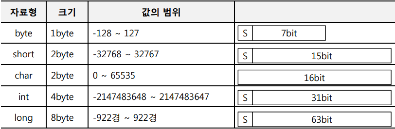

상수와 변수 그리고 자료형
* 상수(Constant)- 항상 일정한 값을 유지하는 데이터
* 변수(Variable)
- 데이터를 저장할 수 있는 메모리 공간이다.
- 특정 상황에 따라 변화하는 데이터.
* 자료형(Data Type)
- 변수의 크기를 규정지어 미리 만들어 둔 크기의 약속.
- 자료형은 데이터의 크기(Size)와 데이터의 형태(Type)를 지정하기 위한 도구이다.
* 변수의 선언 방법
- 자료형 변수명;
- int age; // 변수의 선언
- age = 20; // 변수에 값 할당
- String str = "Hello";
식별자 명명 규칙(naming convention)
- 첫 번째 글자는 문자이거나 ‘$’, ‘_’, 영어 대, 소문자- 문자 수의 제한은 없다.
- 공백문자 및 특수 문자 사용불가
- 숫자는 첫 글자가 아닐 때 사용 가능
- 영어 대소문자를 구분한다.
- 자바 예약어(Keyword) 사용 불가
자바 예약어(Keyword)
* 예약어(Keyword)- 자바에서 미리 특정한 기능을 정의해둔 단어.
* 식별자(Identifier)
- 키워드를 제외한 사용자에 의해 정의된 단어.
데이터 타입
* 기본 타입(primitive type)- 키워드로 정의된 8개의 기본 데이터 타입
- 정의된 형태의 값을 변수에 저장하기 위한 데이터 타입
- 문자 데이터를 저장할 경우 유니코드 값을 사용
- 데이터 타입을 사용하여 변수를 선언하면, 해당 타입에 따라 정해진 메모리 크기가 변수에 할당
* 참조 타입(reference type)
- 참조값(reference value)을 다루기 위한 데이터 타입
- 참조값 : 메모리 주소를 계산할 수 있는 값
- 기본 타입을 제외한 나머지 타입이 이에 해당됨.
- 배열, 클래스, 인터페이스, 열거 타입 등
자바 기본 자료형
* 논리형 타입(boolean)- boolean 타입은 1byte(8bit)로 표현되는 논리값(true/false)을 저장할 수 있는 데이터 타입.
- 상태값에 따라 조건문과 제어문의 실행 흐름을 변경하는데 주로 이용.
* 정수형 타입 
정수 타입
* byte 타입- byte 타입은 색상 정보 및 파일 또는 이미지 등의 이진(바이너리) 데이터를 처리할 때 주로 사용.
- 정수 타입 중 가장 작은 범위의 수를 저장.
- -128 ~ 127 (-2^7 ~ 2^7-1) 까지의 값의 변위를 가지며, 양수가 2^7-1인 이유는 0을 포함 하기 때문.
* char 타입
- 자바는 모든 문자를 유니코드(Unicode)로 처리한다.
- 유니코드는 세계 각국의 문자들을 코드값으로 매핑한 국제 표준 규약
- 유니코드는 하나의 문자에 하나의 코드값을 부여, ‘A’ 및 ‘가’도 하나의 코드값을 갖는다.
- 유니코드는 0 ~ 65535 범위의 2byte 크기를 가진 정수값
- 0 ~ 127까지는 아스키(ASCII) 문자(특수기호 및 영어 알파벳)가 할당
- 44032 ~ 55203까지는 한글 11172자가 할당되어 있다.
* char 변수의 선언
- char var1 = ‘A’; // 유니코드: 0x0041, 2진수: 00000000 01000001
- char var2 = ‘B’; // 유니코드: 0x0042, 2진수: 00000000 01000010
- char var1 = ‘가’; // 유니코드: 0xAC00, 2진수: 10101100 00000000
- char var1 = ‘나’; // 유니코드: 0xAC01, 2진수: 10101100 00000001
- char c = ‘A’; // 문자로 선언
- char c = 65; // 10진수로 선언
- char c = ‘\u0041’; // 16진수로 선언, 유니코드라는 의미에서 '\u + 16진수값'
* 문자열(String) - String name = "홍길동";
* short 타입 - short 타입은 2byte(16bit)로 표현되는 정수값을 저장할 수 있는 데이터 타입.
- 값의 범위 : -32,768 ~ 32,767(-2^15 ~ 2^15-1)
* int 타입 - int 타입은 4byte(32bit)로 표현되는 정수값을 저장할 수 있는 데이터 타입.
- 값의 범위 : -2,147,483,648 ~ 2,147,483,647(-2^31 ~ 2^31-1)
- int 타입은 자바에서 정수 연산을 하기 위한 기본 타입.
- byte 또는 short 타입의 변수를 + 연산하면 int 타입으로 변환된 후 연산되고 연산의 결과 역시 int 타입이 된다
* long 타입 - long 타입은 8byte(64bit)로 표현되는 정수값을 저장할 수 있는 데이터 타입.
값의 범위 : -9,223,372,036,854,775,808 ~ 9,223,372,036,854,775,807(-2^63 ~ 2^63-1)
long 타입은 정수값 뒤에 소문자 ‘l’ 이나 대문자 ‘L’을 붙인다.
실수 타입(float, double)
* 실수 타입 - 실수 타입은 소수점이 있는 실수 데이터를 저장할 수 있는 타입으로 float와 double이 있다.실수는 정수와 달리 부동 소수점(floating-point) 방식으로 저장되기 때문에 정수 타입보다 큰 범위의 값을 저장할 수 있다.
데이터 형 변환
* 형 변환 - 형 변환이란 데이터 타입을 다른 데이터 타입으로 변환하는 것.- 자동(묵시적) 형 변환, 강제(명시적) 형 변환이 있다.
* 자동 형 변환(Promotion) - 작은 크기를 가지는 타입이 큰 크기를 가지는 타입에 저장될 때 발생하며, 자동으로 변환이 일어난다.
* 강제 형 변환(Casting, Demotion) - 큰 크기의 타입이 작은 크기의 타입으로 변환되는 것
- 자동으로 변환 할 수 없으며, 강제 형 변환은 캐스팅 연산자()를 사용하여 형 변환한다
- 데이터 손실이 발생할 수 있다.